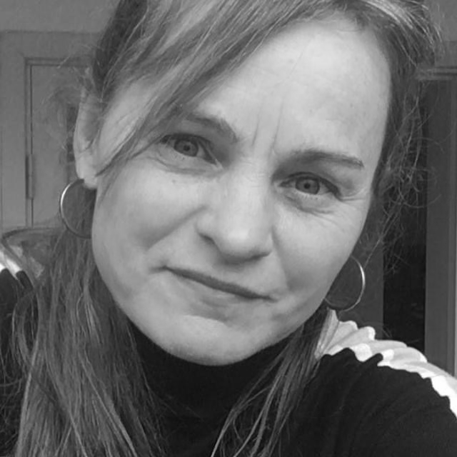

Cathrine Marchen Asmussen
Documentary film director
I am preoccupied with creating sharp portraits in moving images and rounded sound, exploring the art of framing a life within ten minutes
I have directed and filmed short films for 30 years, aiming for depth and poetry
I treasure the precision of the short format
In creation, I listen on several levels to understand a person and their core narrative, so I can portray them sharply and soberly
It is important for me to frame cleanly - the main character must feel seen and recognized
The common thread in my work is challenging stereotypes
There are many truths
Acknowledgements
- 3. Prize Balticum film og TV Festival 1995
- Grand Prix Odense Filmfestival 1999
- Best film for kids DKs TV-festival 2000
- Idfa nominated 2005
- Robert nominated 2006
- GoldenDok nominated 2007
- Robert nominated 2014
- Idfa nominated 2019